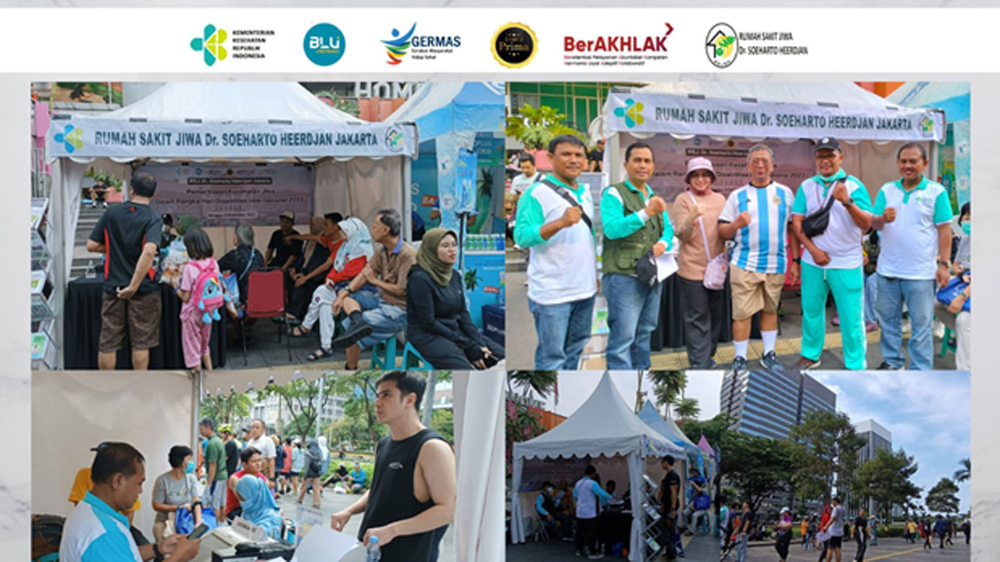

Kesehatan jiwa atau sebutan lainnya kesehatan mental adalah kesehatan yang berkaitan dengan kondisi emosi, kejiwaan, dan psikis seseorang. Perlu kamu ketahui bahwa peristiwa dalam hidup yang berdampak besar pada kepribadian dan perilaku seseorang bisa berpengaruh pada kesehatan mentalnya. Jika diri sendiri atau kerabat menunjukkan gejala masalah kesehatan jiwa secara terus-menerus dan tidak membaik, sebaiknya segera lakukan pemeriksaan ke dokter spesialis jiwa atau psikiater untuk mendapatkan pemeriksaan dan penanganan lebih lanjut.
Depresi merupakan gangguan suasana hati yang menyebabkan penderitanya terus-menerus merasa sedih.
Skizofrenia adalah gangguan mental yang menimbulkan keluhan halusinasi, delusi, serta kekacauan berpikir dan berperilaku.
Gangguan kecemasan merupakan gangguan mental yang membuat penderitanya merasa cemas atau takut secara berlebihan dan terus menerus dalam menjalani aktivitas sehari-hari.
Gangguan bipolar adalah jenis gangguan mental yang ditandai dengan perubahan suasana hati.
Gangguan tidur merupakan perubahan pada pola tidur yang sampai mengganggu kesehatan dan kualitas hidup penderitanya.
